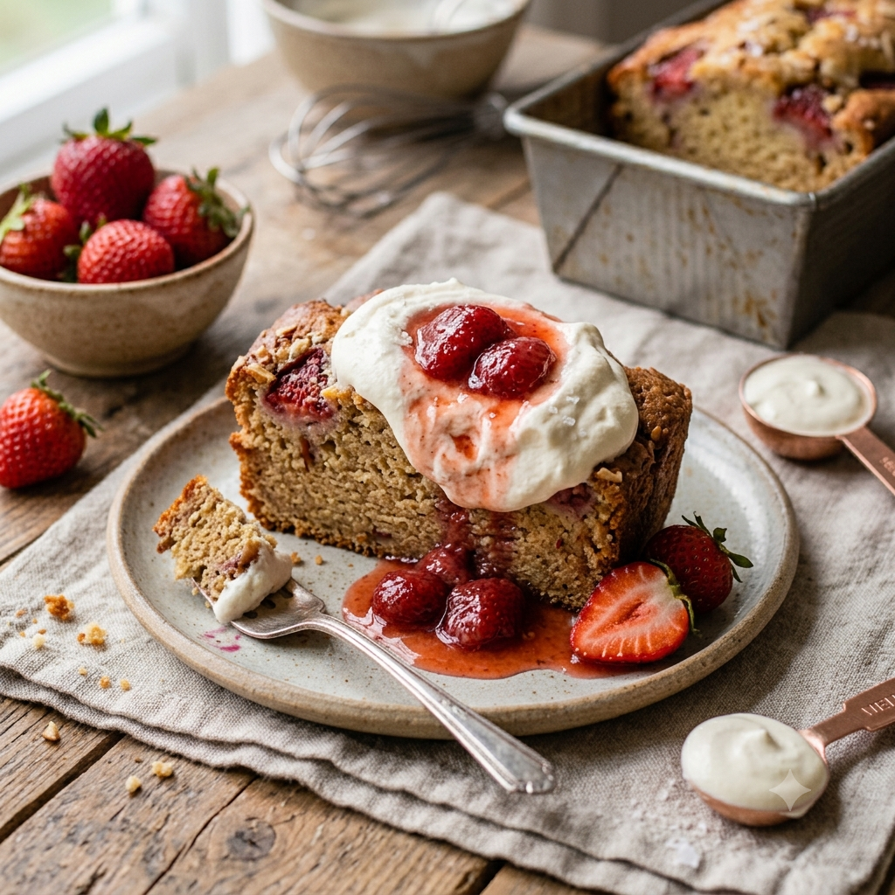

RECETA #012
Panqué de Fresas con Crema

Ingredientes
- 190 g de mantequilla a temperatura ambiente
- 190 g de azúcar
- 250 g de Danonino de fresa o yogurth natural
- 5 piezas de huevo
- Esencia oleica de vainilla, al gusto
- 50 g de Nesquik de fresa
- 1 cucharadita de polvo de hornear
- ¼ cucharadita de bicarbonato
- 200 g de harina
- 6 a 8 fresas frescas rebanadas
Procedimiento
Engrasa el molde y precalienta el horno a 150°C al menos 10 minutos antes de hornear.
Acrema con el aditamento pala la mantequilla con el azúcar durante 5 minutos.
Agrega los huevos de uno a uno, permitiendo que se integren. Añade la vainilla.
Mezcla los ingredientes secos y ciérnelos. Intégralos al batido, alternando con el yogurth.
Coloca un poco de masa sobre el molde y ve acomodando las fresas; cúbrelas con una capa de masa y vuelve a colocar fresas, terminando con una capa de masa.
Hornea por aproximadamente 50 a 60 minutos.